The Challenge
Improve the interface of this AI chat window so as to improve readability and usability and also add dynamism, especially when compared to market leaders such as ChatGPT and Perplexity.
Each study here traces what was breaking, what changed, and the thinking behind it. Move across a picture, or drag it on your phone, to compare the original screen with the redesign.
My Toolkit
Mobile App
It is a great source for getting financial data reported by companies along with transcripts, quarter results and more.
Improve the interface of this AI chat window so as to improve readability and usability and also add dynamism, especially when compared to market leaders such as ChatGPT and Perplexity.
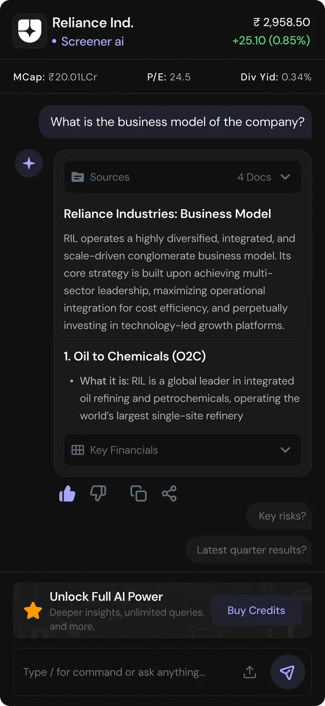
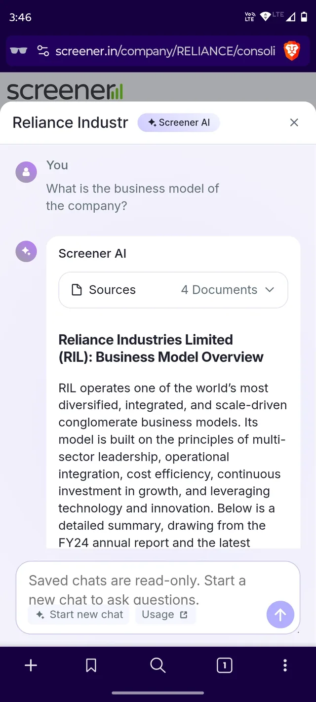
The redesign converts a flat Q&A into a structured financial tool by adding data headers, chunking text, and suggesting follow-up queries.
Value before the ask. Breaking the answer into headers and short blocks lets people see what the AI is worth in the first scan, so the "Buy Credits" upgrade shows up once trust is earned and feels like the next step, not a paywall.
Mobile App
Modernizing player controls for gesture navigation.
Improve the design of this Now Playing screen, so as to add more energy and vibrancy to it. The goal is to make the design more expressive to match the emotive nature of music listening.
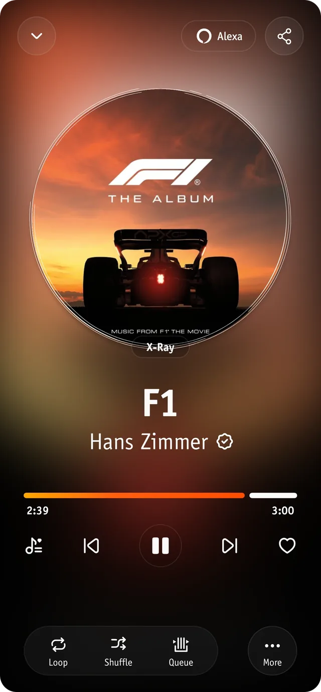
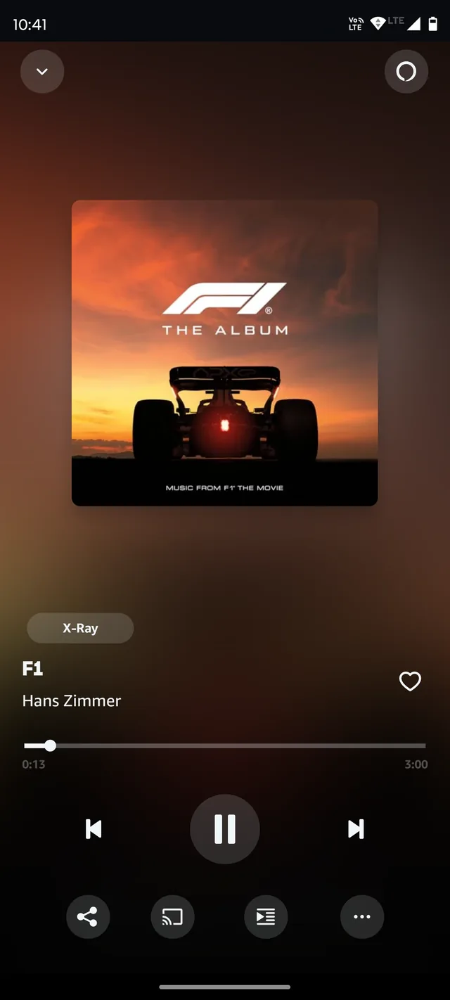
The redesign swaps static square art for a dynamic "vinyl" disk, adds a vibrant glow, and consolidates playback controls into a clean bottom dock.
Design for how listening feels, not just the controls. An expressive Now Playing screen builds an emotional connection, and because people find pleasing interfaces easier to use, play, skip and queue feel effortless.
Web Browser
Ulaa is a Web browser from Zoho. While it was launched a couple of years back, it has recently been in the news. The Indian government is trying to promote homegrown software and apps and Ulaa is one of them.
Improve this screen to make it interesting for a user who is used to other popular browsers.
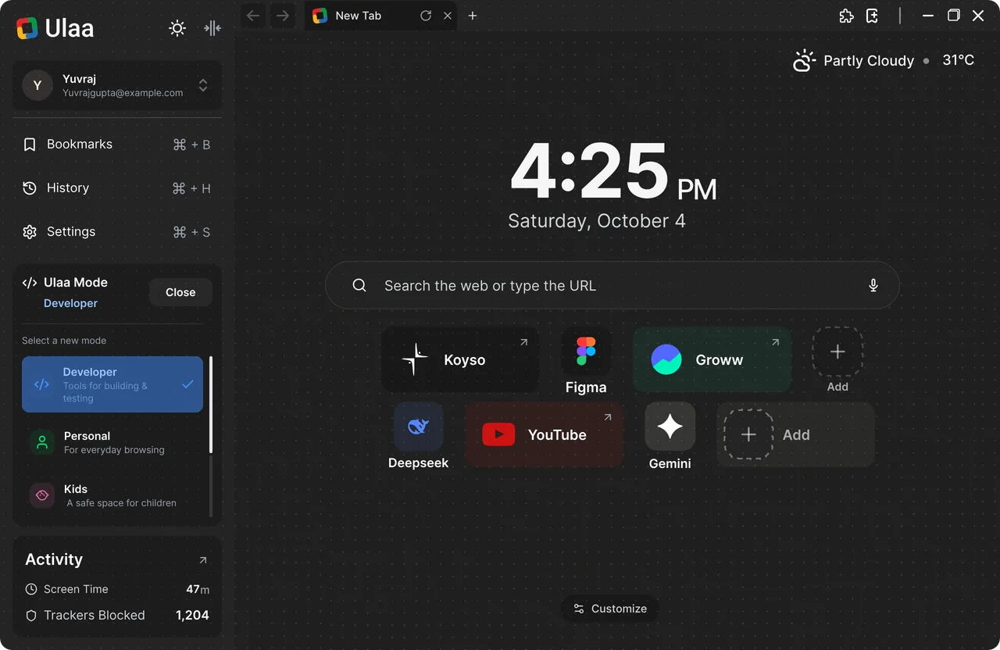
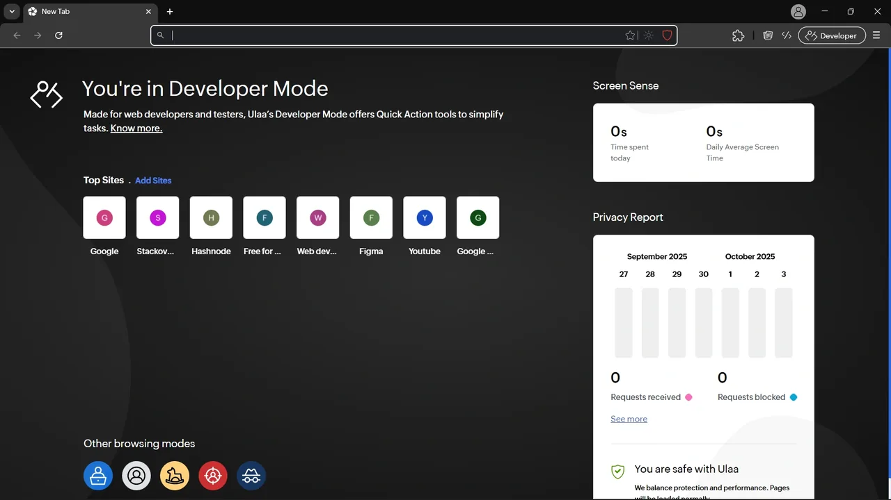
The redesign shifts from a fragmented dashboard to a sleek, centralized hub by adding a sidebar for mode switching and a prominent clock/search focus.
Organise around what people come to do. Bookmarks, history and modes live in one predictable place, so nothing has to be hunted for, and a start page focused on search and time lets someone new feel at home without learning a new browser.
Mobile App
PayZapp is a fintech product from HDFC Bank to help you make Credit card payments, UPI Payments, Shop, and other such activities.
Improve this screen to make it easy for a user to understand the savings they will get and make the buying process easier like easy selection of card and voucher denomination.
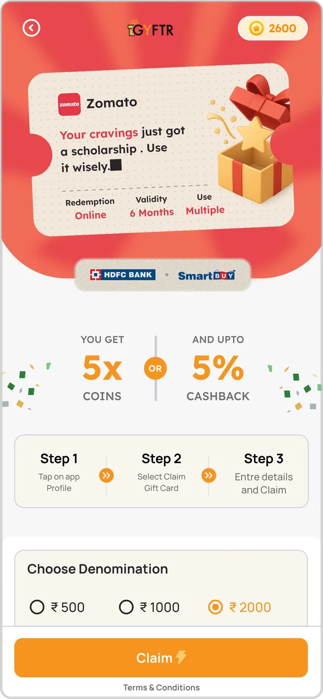
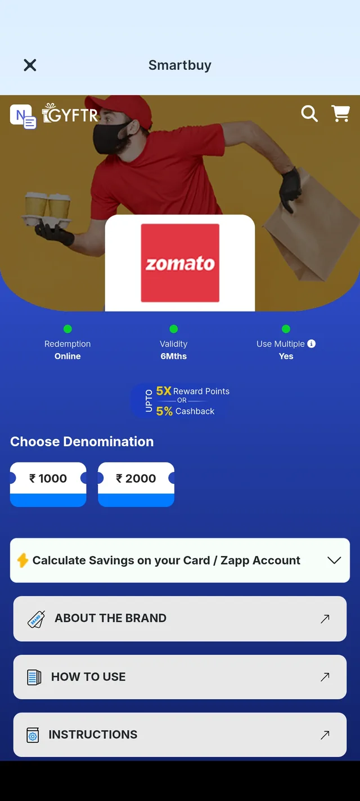
The redesign uses a clear gift card motif and a 3-step guide to simplify redemption while highlighting the dual reward options for better clarity.
Lead with what the user gains. Putting the savings first makes the reward the reason to act, and showing the steps to redeem up front removes the doubt that stalls a purchase, so buying feels quick and safe.
Mobile App
Urban Company is a popular service provider for home maintenance needs, offering services such as plumbing, electrical, and cleaning.
Redesign this screen to make it easier for users to determine the number of hours they want the maid to work. Also consider other factors that one needs to consider besides time.
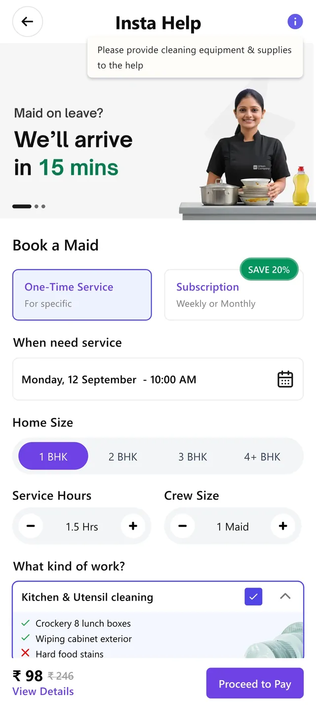
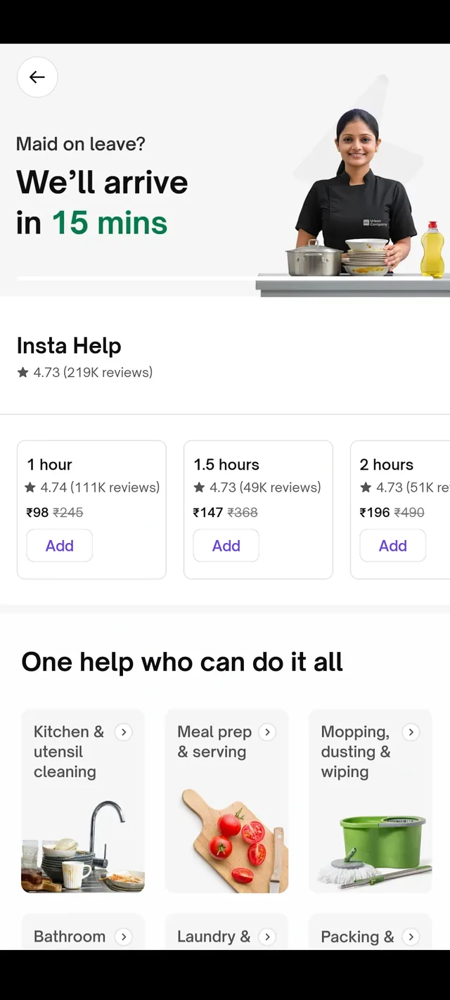
The redesign replaces generic service cards with a customizable booking engine that allows users to toggle home size, crew size, and specific tasks.
Let people describe their need instead of guessing a package. Choosing home size, crew and tasks puts them in control, and a price that updates with every choice sets clear expectations before they book.
Web Dashboard
html.to.design is a popular Chrome extension, that can convert any website into Figma frames.
Redesign this screen to make it intuitive for first-time users. You may add, remove or edit the features shown here. Also, improve the overall design quality of this screen.
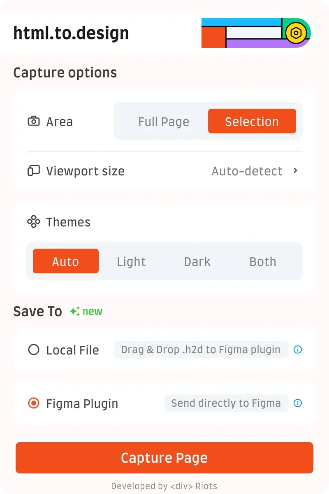
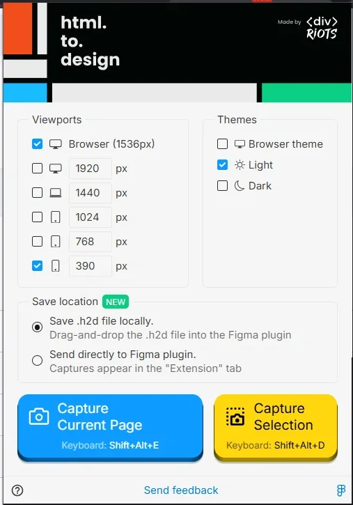
The redesign simplifies complex checkbox lists into clean segmented controls and a single primary CTA, reducing choice paralysis.
Fewer choices, faster start. Every extra option slows a first-time user down, so the flow asks only what matters, in a clear order, and ends in one obvious action.